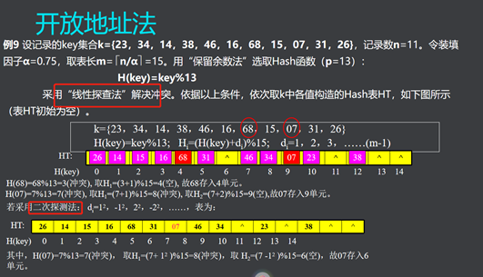
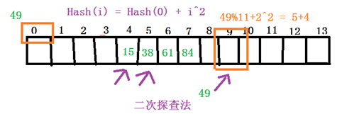

4、Hash查找-二次探查法·：
|  |
|---|
 |
例题：
设哈希表长为14，哈希函数是H(key)=key%11,表中已有数据的关键字为15，38，61，84共四个，现要将关键字为49的结点加到表中，用二次探测再散列法解决冲突，则放入的位置是( ) 【南京理工大学 2001 一、15 （1.5分）】
A．8 B．3 C．5 D．9
答案为D,
计算步骤如下:
15，38，61，84用哈希函数H(key)=key%11计算后得地址:4,5,6,7
49计算后为5,发生冲突.
二次探测再散列法解决冲突:
1:(key+1^2)%11=(49+1)%11=6,仍然发生冲突.
2:(key-1^2)%11=(49-1)%11=4,仍然发生冲突.
3:(key+2^2)%11=(49+4)%11=9,不再发生冲突.
得出结果为D
拓展：什么是二次探查法：

数据结构中的二次探查法题目，解决办法附件图（题目需要的探查因子需要是整数，所以不使用浮点数的增长值）